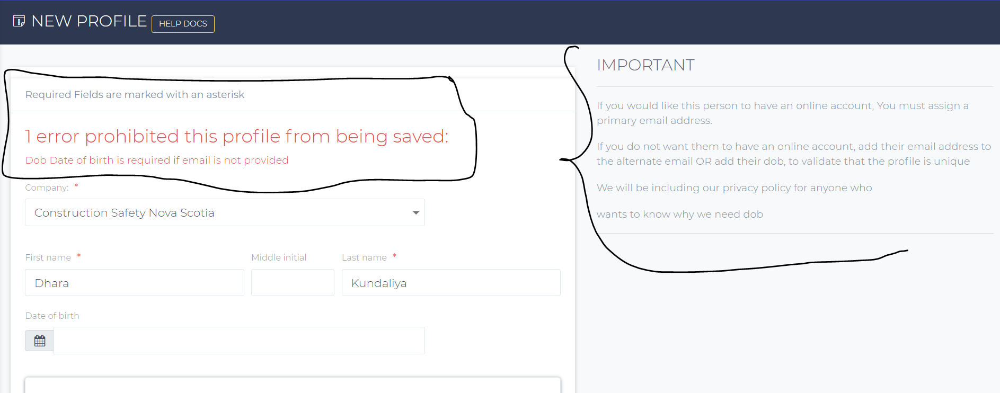
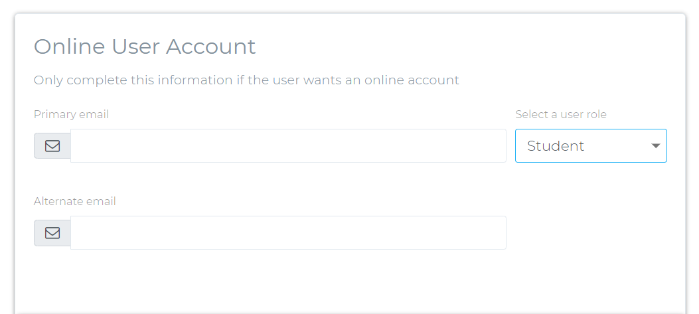

How to create a user profile and what does each field on the create profile page means??
Check out App navigation page to understand the application navigations.
To create a user profile, navigate to the profiles page and click on the + icon to open the create page to add a new profile.-
Company: This dropdown shows all the active companies in the system.
If the user doesn't have any company and want to take a course then create an individual company for that user. and on the profile page, select the company you just created for the user.
-
First Name: The First name of the user.
Middle name: You can provide middle initial or middle name of the user.
Last Name: The Last name of the user. -
Date of Birth (DOB): If you don't wish the user to have an online account or you don't know their email addresses then you must provide the DOB of the user. Please see the policy document to know more about why we require user's DOB and related securities. The system will validate, if the form has any of the below values on submit action or not.
- DOB
- Primary Email Address
- Alternate email address
If the you don't provide any of these values then the system will display an error message shown in the below picture.
 -
What is the online user account section on the create profile page??
If you wish the user to have an online account then fill out this section as shown in the above picture.
- Primary Email Address: If users want to have an online account, they must provide an email address. Without the email address they can't have an online account. Please view Benefits of having an online account for more information.
- User Roles: Check out Different user roles explained for more information on different types of user roles. In general, if you are creating a profile for students who just wants to take online courses and register for different classes then select Student role from the user role dropdown and if you want to give user an account manager role to manage their own organizaation then select account manager role.
- Alternate Email Address:So, user doesn't want to provide DOB and also she/he doesn't want an online account, in that case, you can add alternate email address. That way we will have something to uniquely identify the user's profile in our system. If in future, the user wants to have an online account then you can use alternate email address as their primary email address to send the user invite link.
- Contact Information: You can provide contact information of the user in this section like their address and phone numbers.